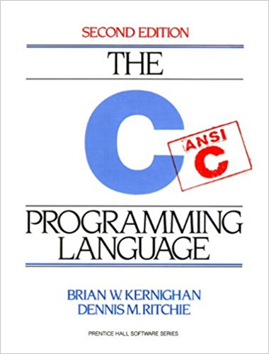
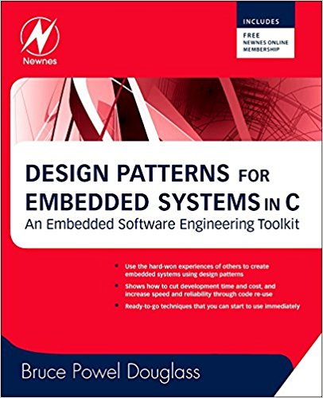
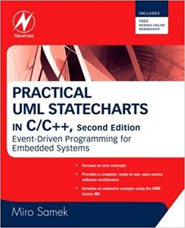
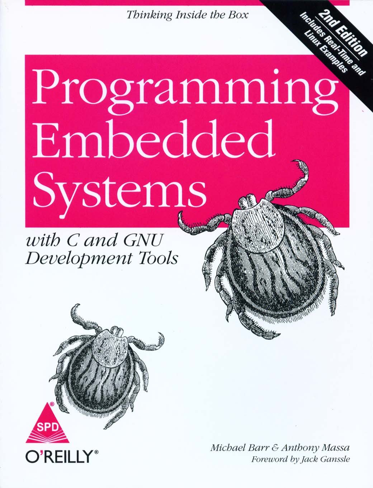
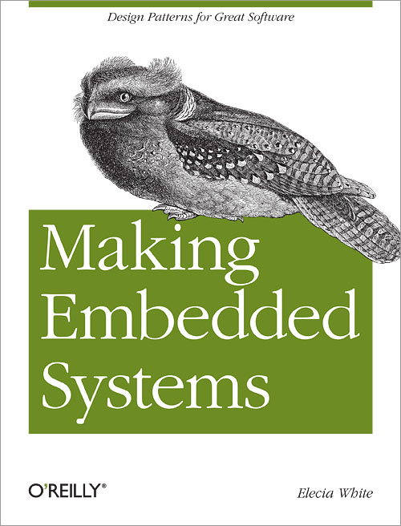

Embedded C books

C Programming Language, 2nd Edition
C Programming Language, 2nd Edition
Brian W. Kernighan & Dennis M. Ritchie

Design Patterns for Embedded Systems in C: An Embedded Software Engineering Toolkit 1st Edition
Design Patterns for Embedded Systems in C: An Embedded Software Engineering Toolkit 1st Edition
Bruce Powel Douglass

Practical UML Statecharts in C/C++, 2nd Edition: Event-Driven Programming for Embedded Systems
Practical UML Statecharts in C/C++, 2nd Edition: Event-Driven Programming for Embedded Systems
Miro Samek

Programming Embedded Systems, 2nd Edition: With C and GNU Development Tools
Programming Embedded Systems, 2nd Edition: With C and GNU Development Tools
Michael Barr, Anthony Massa

Making Embedded Systems: Design Patterns for Great Software
Making Embedded Systems: Design Patterns for Great Software
Elecia White